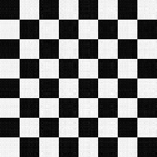
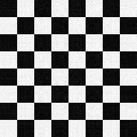

Overview
The workflow computes A^T A, runs LIS power iterations to estimate dominant eigenvalues, and uses SVD to build low-rank reconstructions (CD^T). The pipeline also synthesizes checkerboard data and analyzes noise propagation.
Key tasks
- Compute A^T A and export matrix market files.
- Estimate eigenvalues with LIS power method.
- Generate low-rank reconstructions via SVD.
- Create and denoise checkerboard patterns.
Implementation notes
- Uses Eigen for SVD and matrix operations.
- Invokes LIS with mpirun for eigen-solves.
- Exports diagnostic outputs and logs.
Low-Rank Reconstruction
Compare how two ranks influence reconstruction detail.


k = 40
k = 80
Noise Handling
Visualize how stronger noise levels alter the reconstructed output.


Noise 5
Noise 10